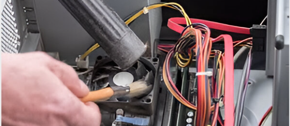
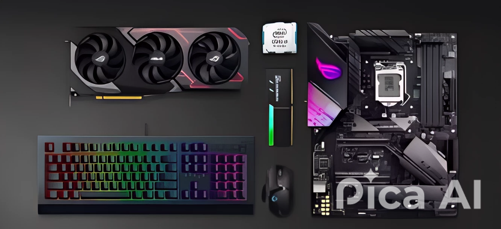
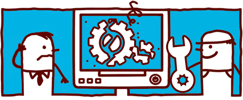

Limpieza de equipos
En Gaming Force, nos especializamos en la limpieza y mantenimiento de equipos para garantizar su óptimo funcionamiento y una larga vida útil. Eliminamos suciedad, grasa y residuos con productos y técnicas especializadas, asegurando un rendimiento impecable y cumpliendo con los estándares de seguridad e higiene. ¡Confía en nosotros para mantener tus equipos como nuevos! 🔧🔹

Mejora de Componentes
Optimizamos el rendimiento de tus equipos con la mejora y sustitución de componentes clave. Actualizamos piezas obsoletas, incrementamos la eficiencia y alargamos la vida útil de los dispositivos para que funcionen al máximo rendimiento. Con nuestras soluciones personalizadas, tu equipo estará siempre en vanguardia de la tecnología.

Mantenimiento Preventivo 🔧
¡Prevenimos problemas antes de que surjan! Nuestro servicio de mantenimiento preventivo garantiza el buen funcionamiento y durabilidad de tus equipos mediante revisiones periódicas, limpieza, ajustes y detección anticipada de averías. Ahorra tiempo y dinero evitando costosas reparaciones con nuestro plan a medida.
